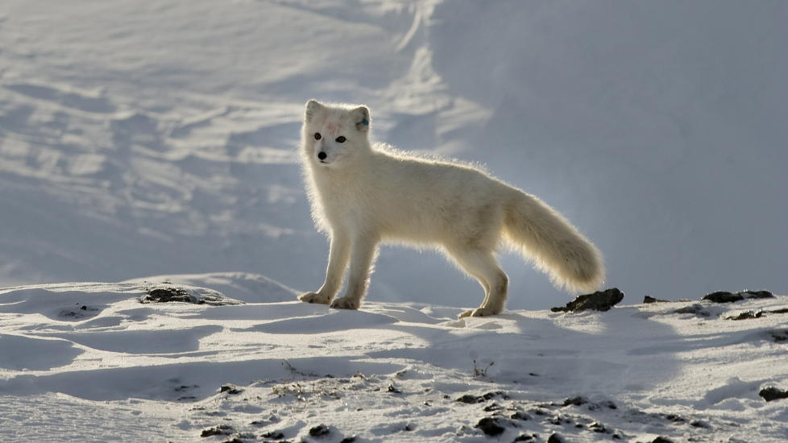
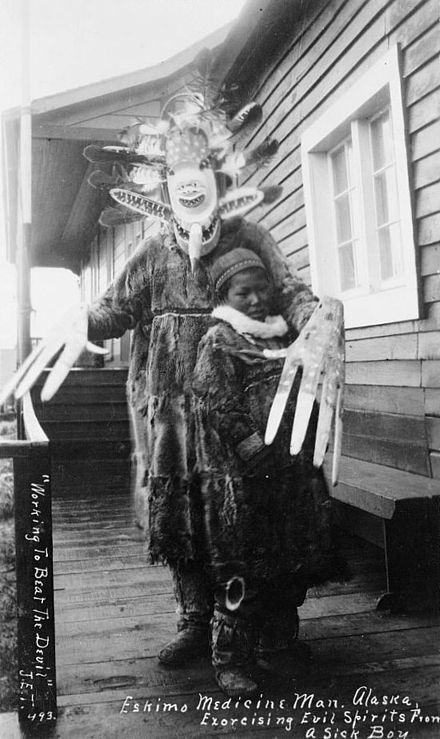

Grunnleggende fakta om inuitter

Bildekilde: http://www.windows2universe.org/earth/polar/images/lc_inuit_sm.jpg
Inuitter defineres som, i likhet med samene, et urfolk. De holder til i de arktiske strøkene i Grønnland, Canada og Alaska, der de lever et nomadisk(altså at de er stadig på vandring og endrer boplass hele tiden) liv med jakt og fiske. Hval, sel og fisk har alltid vært, og er fortsatt, noe av det viktigste inuittene lever av å jakte og spise. I tillegg til disse tre tingene, jakter inuittene også på fugler, isbjørner og til og med polarrev. Disse tingene har et svært høyt protein- og fettinnhold, og inuittene får mer en 75% av energien sin fra fett.
Inuitter spiste denne søte saken.
Bildekilde:http://gfx.dagbladet.no/labrador/239/239082/23908247/jpg/active/978x.jpg
De første europeerne som kom i kontakt med inuitter var vikingene. Gamle nordiske fortellinger forteller om “skrælingar”. Dette ordet beskriver ikke bare inuitter, men også alle folkeslagene vikingene møtte på.
Selvom inuittene ikke hadde noe lovsystem, slikt som vi ofte har i moderne land, hadde de en viss form for lov. Disse var ikke skrevet ned.
Maligait - Det som må følges
Piqujait - Det som må gjøres
Tirigusuusiit - Det som må unngås
De mytologiske fortellingene til inuittene blir fortsatt fortalt blant noen inuitter. Det er en naturreligion, i likhet med samenes gamle religion, og de trodde på at alt hadde en form for sjel. Igjen i likhet med samene, hadde de også en sjaman. Denne sjamanen ble kalt angakkoq, og han kunne bistå sitt folk mot onde makter.
Bildekilde: https://no.wikipedia.org/wiki/Angakkoq#/media/File:Yupik_shaman_Nushagak.jpg
Det finnes en myriade av interessante konsepter innenfor inuittenes kultur. Samtidig som å ha flere smarte kontrapsjoner som qulliq lampen, denne brukte hvalfett til å brenne, hadde de også en stor del ulogiske og irrasjonele normer som, for eksempel, det å ikke steke fisk før de hadde gått i en dag fra der de fisket fisken. Denne normen gjorde at fisk vanligvis ble spist rå, rett etter at den var fisket.
Ordet eskimo refererer til inuitter og til yupik folkene i Grønland, Kanada, og Alaska. Inuitter jaktet på hvaler, seler, og land dyr som karibu og moskusfe, i tillegg fisket de ved å bore hull i isen og bruke mat til å lure fisk for så å fange de med spyd.
- Hjem
- -->
- Hvorfor Inuitter?
- -->
- Arbeidsprosess
- -->
- Grunnleggende Fakta